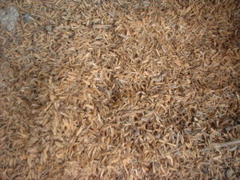

ukaba2 
/ʔukaba/
n.
“chaff”
n.
chaff (from winnowing)
Wrd.Gloss: chaff
Eg-etapan ku pad ka hemey su masalig ka ukaba.
Eng. chaff; husk; straw
Tag. ipá; talúpak; úpak
Ceb. tahop
Ilo.: it-ta
OCM: Preservation and Storage of Food (251)
Online dict status: -
Usage level: B
v.
for something (eg-ukabeen, eg-ukabe:n, patient, eg><en-) to have chaff in it
Ka behas diyè te tindaan, ukabeen su warè amana napalayapi.
The rice in the shop is full of chaff because it wasn't separated in the wind very well.
Online dict status: -
Usage level: M
Updated by: RJH,AAA
Last updated: 13/Oct/2009
"ukaba" in text "Preparing Ground Corn"
This page last updated: 03-Jan-2020
Copyright © 2009-2014, Matigsalug Language Christian Association, Inc